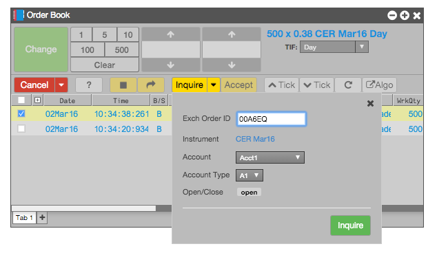

The Order Book widget allows you to inquire about EEX and Eurex block trades.

To send an inquiry to the exchange (EEX and Eurex only) about a block trade:
To accept an offered block trade, select the order and click Accept. When accepting an order, you can also change the following attributes before accepting the block order:
Note: If the buy-side trader modifies an order between the time you inquire and accept the block trade, TT automatically updates the order.